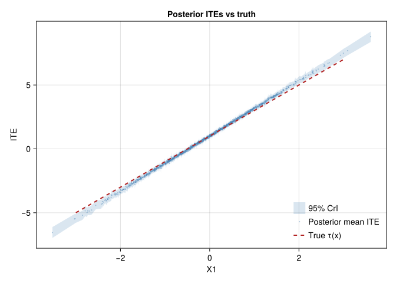

using DataFrames
using Distributions
using GLM
using Statistics
using Random
using LinearAlgebra
using Printf
using CairoMakie11 Bayesian Causal Inference
Bayesian methods return a posterior distribution, not only a point estimate and a standard error. For causal inference this is useful when we want uncertainty about individual treatment effects, policy values, or other derived quantities.
The two common models in this area are:
- BART for causal inference (Hill 2011) — Bayesian Additive Regression Trees as a flexible outcome model.
- Bayesian Causal Forests (BCF; Hahn-Murray-Carvalho 2020) — BART extended to separate prognostic and treatment-effect components.
Both have mature R packages (BART, bcf). Julia does not currently have a comparable BART/BCF workflow. So this chapter shows the basic Bayesian g-computation idea with a conjugate linear model, and points to R for the tree-based versions.
Related reading: For a hands-on Bayesian model with
Numpyro, see the Using Numpyro chapter in Topics on Econometrics and Causal Inference. The R companion gives the BART and BCF version.
11.1 Setup
Random.seed!(42)
n = 1500
p = 3
X = randn(n, p)
ps = @. 1 / (1 + exp(-(-0.3 + 0.5 * X[:, 1] + 0.3 * X[:, 2])))
D = Float64.(rand(n) .< ps)
tau = @. 1 + 2 * X[:, 1] # true CATE
Y0 = @. 0.5 * X[:, 2] + 0.3 * X[:, 3] + randn()
Y1 = Y0 .+ tau
Y = ifelse.(D .== 1, Y1, Y0)
df = DataFrame(Y = Y, D = D, X1 = X[:, 1], X2 = X[:, 2], X3 = X[:, 3])
@printf("True ATE = %.3f\n", mean(tau))True ATE = 0.90111.2 Bayesian g-computation
The simplest Bayesian causal inference recipe is Bayesian g-computation:
- Specify a Bayesian model for \(\mathbb{E}[Y \mid D, X]\).
- Sample from the posterior of the regression parameters.
- For each posterior draw, compute counterfactual outcomes \(\hat Y(1), \hat Y(0)\).
- The posterior of the ATE is the distribution of the average difference across posterior draws.
A Bayesian linear regression with a flat prior is enough to show the idea:
"""
bayes_linreg(X, y; n_samples=2000)
Bayesian linear regression with a Normal-Inverse-Gamma conjugate prior
(flat prior → the posterior is centered at the OLS estimates, with spread
close to the OLS standard errors). Returns `n_samples` posterior
draws of (β, σ²).
"""
function bayes_linreg(X::Matrix, y::Vector; n_samples::Int = 2000)
n, p = size(X)
XtX_inv = inv(X' * X)
beta_hat = XtX_inv * X' * y
sse = sum(abs2.(y .- X * beta_hat))
# σ² ~ InverseGamma((n-p)/2, sse/2)
σ²_post = [rand(InverseGamma((n - p) / 2, sse / 2)) for _ in 1:n_samples]
# β | σ² ~ MultivariateNormal(beta_hat, σ² * XtX_inv)
betas = zeros(n_samples, p)
for i in 1:n_samples
cov_mat = σ²_post[i] .* XtX_inv
betas[i, :] = rand(MvNormal(beta_hat, Symmetric(cov_mat)))
end
return betas, σ²_post
end
# Fit on (D, X1, X2, X3, D*X1, D*X2, D*X3) — allow treatment effect heterogeneity
DesignMat = hcat(ones(n), df.D, df.X1, df.X2, df.X3,
df.D .* df.X1, df.D .* df.X2, df.D .* df.X3)
betas, σ²_draws = bayes_linreg(DesignMat, df.Y; n_samples = 2000)
# Counterfactual prediction matrices
X_treat = hcat(ones(n), ones(n), df.X1, df.X2, df.X3,
df.X1, df.X2, df.X3) # D = 1, so D*X = X
X_control = hcat(ones(n), zeros(n), df.X1, df.X2, df.X3,
zeros(n), zeros(n), zeros(n)) # D = 0
# Posterior ITEs: n_samples x n
ite_post = (X_treat * betas')' .- (X_control * betas')'
# ATE posterior: average over n at each draw
ate_post = vec(mean(ite_post, dims = 2))
@printf("Bayesian g-computation:\n")
@printf(" Posterior mean ATE: %.3f\n", mean(ate_post))
@printf(" Posterior SD: %.3f\n", std(ate_post))
@printf(" 95%% CrI: [%.3f, %.3f]\n",
quantile(ate_post, 0.025), quantile(ate_post, 0.975))
@printf(" True ATE: %.3f\n", mean(tau))Bayesian g-computation:
Posterior mean ATE: 0.904
Posterior SD: 0.056
95% CrI: [0.798, 1.016]
True ATE: 0.901With a flat prior, this credible interval is close to the usual frequentist interval. With informative priors, the posterior reflects both the prior and the data.
11.2.1 Individual-level credible intervals
ite_mean = vec(mean(ite_post, dims = 1))
ite_lo = [quantile(ite_post[:, i], 0.025) for i in 1:n]
ite_hi = [quantile(ite_post[:, i], 0.975) for i in 1:n]
# Sort by X1 for plotting
ord = sortperm(df.X1)
fig = Figure(size = (700, 400))
ax = Axis(fig[1, 1], xlabel = "X1", ylabel = "ITE",
title = "Posterior ITEs vs truth")
band!(ax, df.X1[ord], ite_lo[ord], ite_hi[ord],
color = (:steelblue, 0.2), label = "95% CrI")
scatter!(ax, df.X1, ite_mean, color = (:steelblue, 0.4), markersize = 3,
label = "Posterior mean ITE")
lines!(ax, [-3, 3], 1 .+ 2 .* [-3, 3], color = :firebrick,
linestyle = :dash, linewidth = 2, label = "True τ(x)")
axislegend(ax, position = :rb, framevisible = false)
fig
The blue ribbon is the pointwise 95% credible interval. The red dashed line is the true treatment-effect function.
11.3 Why use BART/BCF in R instead?
The linear g-computation above is useful when:
- the outcome model can be approximated with a few interactions;
- the effect modifiers are known in advance.
For flexible Bayesian causal inference, R’s BART and bcf are better tools. They use sums of regression trees and provide:
- flexible outcome models without manually specifying interactions;
- posterior draws of individual treatment effects;
- in BCF, separate priors for baseline prediction and treatment-effect heterogeneity.
Compare the rough sketch:
| Capability | Julia (this chapter) | R (BART/BCF) |
|---|---|---|
| Bayesian point estimate of ATE | ✓ | ✓ |
| Posterior credible intervals | ✓ | ✓ |
| Flexible nonparametric outcome model | (limited to linear + interactions) | ✓ |
| Native ITE posterior with regularisation | (linear-model heterogeneity only) | ✓ |
| Separation of prognostic and treatment effects | – | ✓ (BCF) |
For now, Julia users who need BART/BCF should call out to R. Reimplementing these models in Julia would be a separate package project.
11.4 When to use Bayesian methods
| Reason to use Bayesian | Reason to use Frequentist |
|---|---|
| Prior information matters | Asymptotic theory is well-understood |
| Need full posterior for downstream decisions | Computational cost matters at scale |
| Small sample, weak identification | Effects are well-identified |
| Want individual-level CrIs | Existing frequentist toolkit suffices |
Bayesian methods are most useful when the posterior itself will be used: for treatment recommendations, policy values, or hierarchical models. If the target is just a well-identified ATE in a large sample, the frequentist tools are usually simpler.
11.5 Connections
- The Heterogeneous Treatment Effects chapter covers frequentist meta-learners. BCF is the Bayesian counterpart to causal forests.
- The Sensitivity Analysis chapter’s Cinelli-Hazlett bounds are frequentist; the Bayesian analog puts a prior on the unmeasured-confounder strength (McCandless et al. 2007).
- For a hands-on Numpyro example of Bayesian modelling, see Using Numpyro.
11.6 Summary
- Bayesian g-computation computes counterfactual outcomes for each posterior draw.
- A conjugate linear model is easy to implement in Julia and is useful for exposition.
- For BART and BCF, use the R packages for now.
- For a Python/Numpyro Bayesian model, see the Using Numpyro chapter.